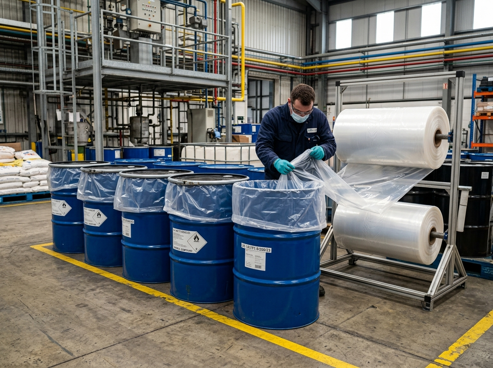
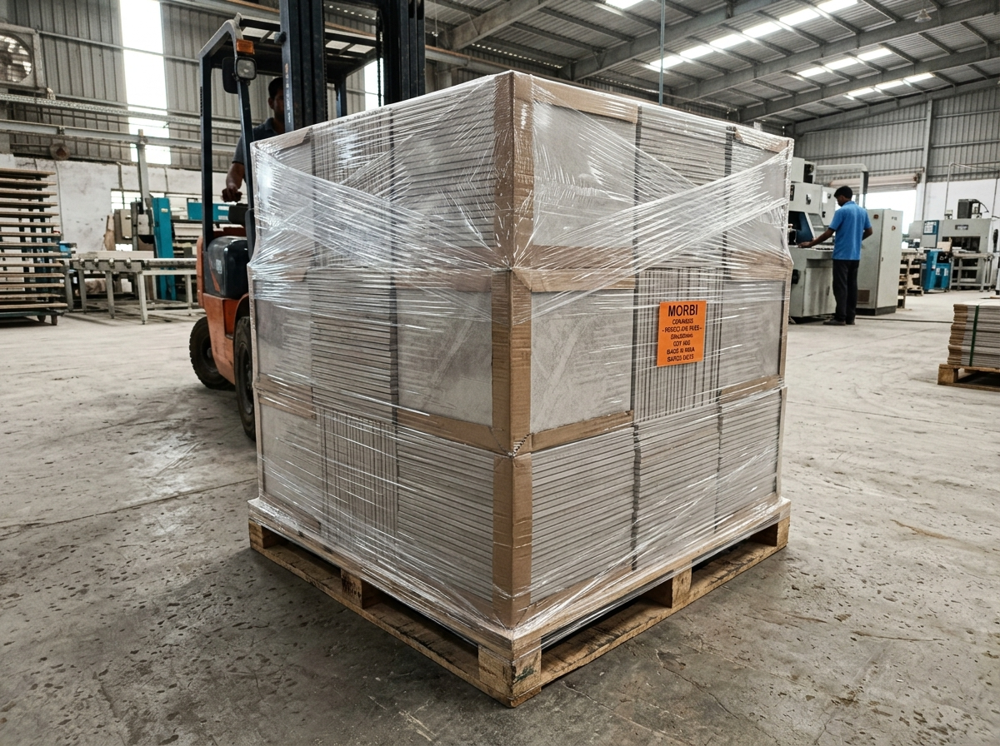
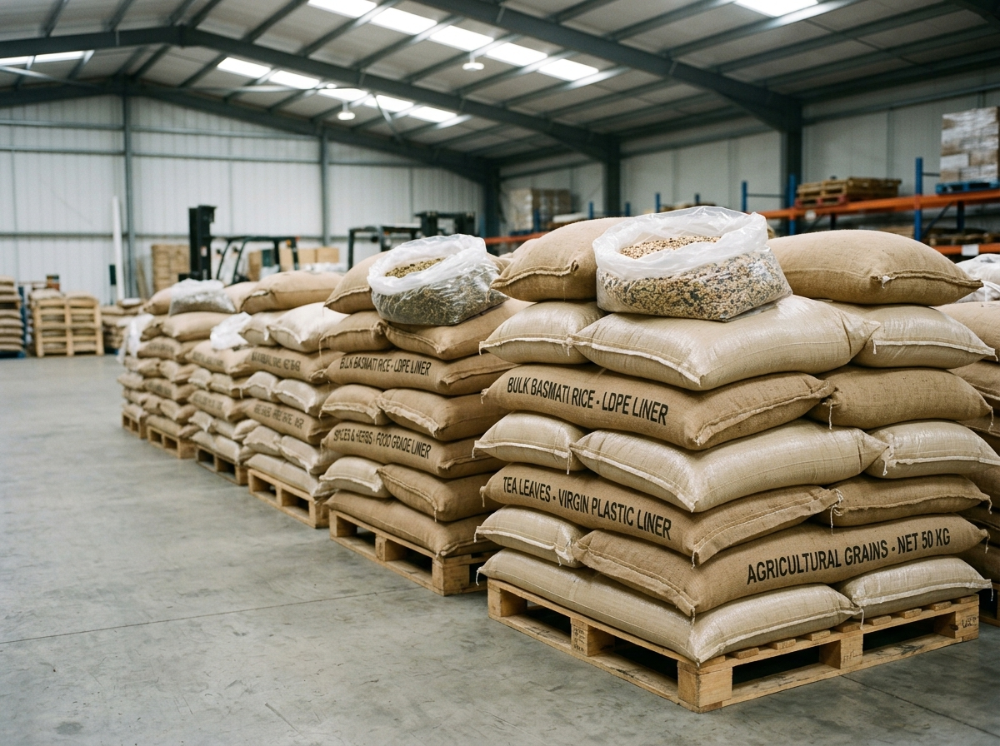
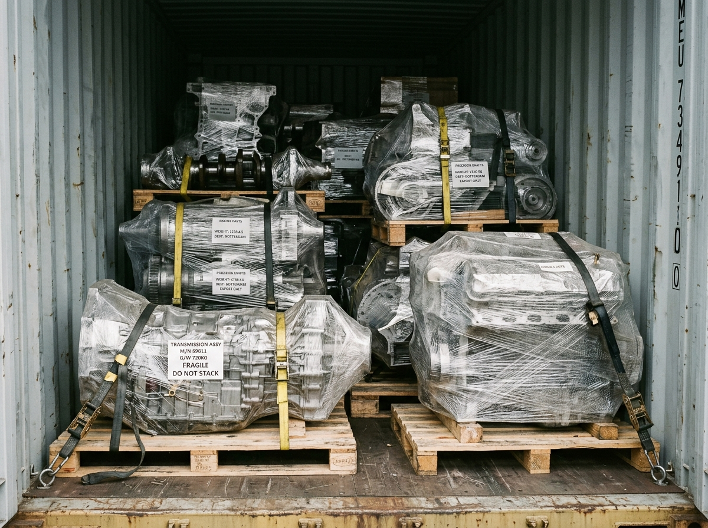

Industry 01
Chemical & Petrochemical
Essential for 200L steel drums, fibre drums, and plastic barrels. Acts as a heavy-gauge chemical barrier preventing drum wall corrosion, leakage, and cross-contamination.


Explore how leading manufacturing and processing sectors utilize Agola Polymer LD Liner Rolls to safeguard products, prevent transit damage, and streamline bulk shipping.
Essential for 200L steel drums, fibre drums, and plastic barrels. Acts as a heavy-gauge chemical barrier preventing drum wall corrosion, leakage, and cross-contamination.

Protective pallet bottom lining and moisture barrier for Morbi's ceramic tile export boxes. Shields tile surfaces from road vibrations, carton chafing, and monsoon moisture.

US FDA compliant virgin liners for bulk burlap bags, FIBC bulk bags, and corrugated boxes containing spices, flour, basmati rice, sugar, tea, and dairy ingredients.

Heavy-duty ocean shipping sea container lining and metal machinery packaging. Blocks saltwater mist, high humidity, and 'container rain' during long-distance transits.

Quick answers to technical, commercial, and dispatch inquiries regarding our LD Liner Rolls.
Continuous LD liner rolls allow packaging operators to cut custom lengths on-demand, accommodating varying container depths and drum sizes without maintaining excessive pre-made bag inventory. It eliminates scrap, reduces packaging warehouse footprint by up to 35%, and cuts per-unit packaging costs.
For standard dry chemical powders and non-corrosive granular goods, 75 to 100 microns is standard. For aggressive chemical substances, viscous liquids, or sharp crystallines, heavy-duty 125 to 200 micron LLDPE rolls with superior dart impact strength are recommended.
Yes, our Food Grade LD Liner Rolls are extruded exclusively using 100% prime virgin polymers compliant with US FDA 21 CFR 177.1520 and Indian Standard IS 10146, ensuring zero chemical leaching, zero odor transfer, and complete food safety.
We provide factory-direct wholesale pricing with flexible MOQs starting from 300 kg for custom dimensions, and up to multi-ton container loads for large enterprise buyers and international exporters.
Yes. While natural crystal clear is most popular for product visibility, we also manufacture milky white, opaque black, UV-inhibited, and anti-static blue liner rolls for specialized industrial and outdoor storage requirements.
From our advanced manufacturing plant in Morbi, Gujarat, standard roll specifications are dispatched within 24 to 48 hours. Custom engineered extrusion orders are completed and dispatched within 3 to 5 business days with direct pan-India transit.